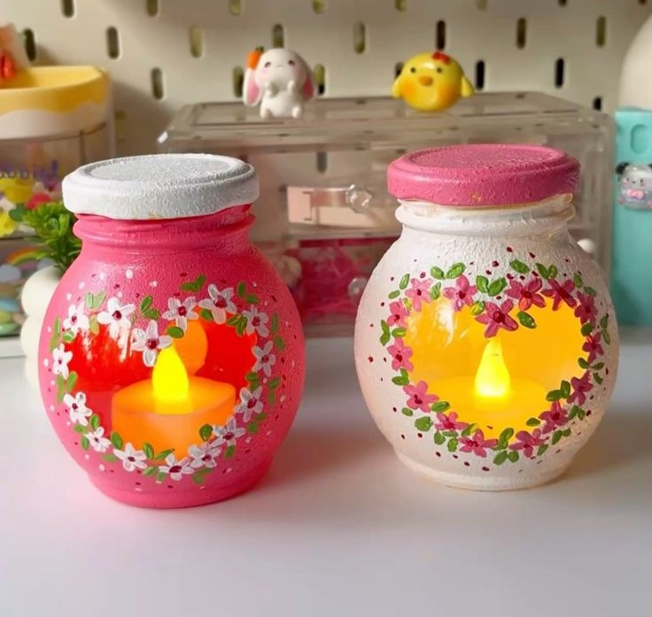
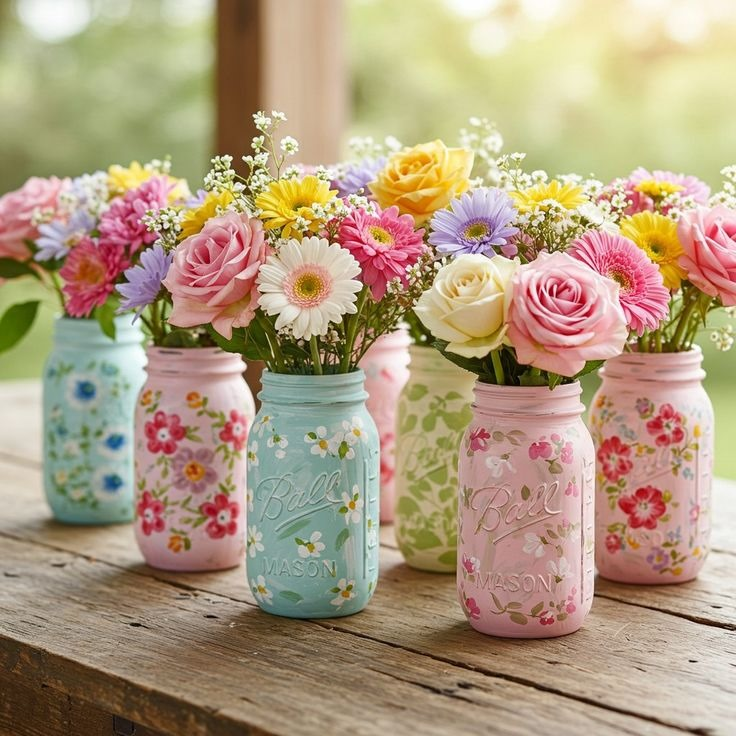
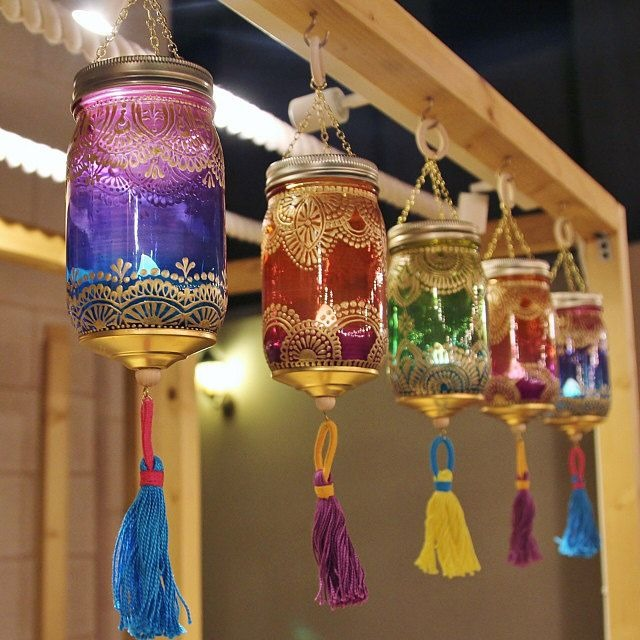

Malzemeler:
• Cam kavanoz (herhangi bir boyut)
• Hazır mum (kavanoza uygun boyutta)
• Süsleme malzemeleri: ip, kurdele, boncuk, taş (isteğe bağlı)
• Sıcak silikon tabancası (isteğe bağlı)
Adımlar:
1- Kavanozun etiketini çıkarıp iyice temizleyin.
2- Hazır mumu kavanozun içine dikkatlice yerleştirin. Sabitlemek için gerekirse sıcak silikon kullanabilirsiniz.
3- Kavanozun ağzına jüt ipi, kurdele veya dantel sarın. Dilerseniz dekoratif taşlar veya boncuklar ekleyebilirsiniz.
4- Mumunuz yanmaya başladığında, camın içindeki ışık çok şık bir atmosfer yaratacaktır!

Malzemeler:
• Birkaç cam kavanoz
• Toprak
• Sucul bitkiler veya sukulentler
• Dekoratif taşlar veya renkli taşlar
• Küçük çakıl taşları (drainaj için)
Adımlar:
1- Kavanozunuzu iyice yıkayıp kurulayın.
2- Eğer kavanozunuzun tabanında suyun birikmesini istemiyorsanız, tabana birkaç küçük delik açabilirsiniz. Bu delikler, fazla suyun dışarı çıkmasına yardımcı olur.
3- Kavanozun dibine küçük çakıl taşları veya dekoratif taşlar ekleyin. Bu, suyun taşarak dışarı çıkmasını engelleyecektir.
4- Kavanozun yarısına kadar toprak ekleyin. Ardından, bitkinizi dikkatlice yerleştirin.
5- Saksıyı daha dekoratif hale getirmek için, üzerini dekoratif taşlarla veya renkli cam boncuklarla süsleyebilirsiniz.
6- Bitkinizi sulayın ve doğal ışık alacağı bir yere yerleştirin.

Malzemeler:
• Cam kavanoz
• Altın, gümüş veya renkli sprey boya
• Yapışkanlı duvar kancaları (isteğe bağlı)
• Kurutulmuş çiçekler veya boncuklar (isteğe bağlı)
Adımlar:
1- Kavanozları istediğiniz renk ile sprey boya kullanarak boyayın. İsterseniz tamamen boyayabilir, isterseniz kavanozun belli kısımlarını altın veya gümüş gibi metalik tonlarla vurgulayabilirsiniz.
2- Boya kuruduktan sonra, kavanozların içine kurutulmuş çiçekler, renkli boncuklar veya başka dekoratif objeler ekleyebilirsiniz.
3- Kavanozları bir duvarda dekoratif bir alan oluşturacak şekilde kullanabilirsiniz. Yapışkanlı duvar kancaları ile kolayca asılabilirler. Bu tür süslemeler, özellikle shabby chic tarzı iç mekanlarda hoş bir hava yaratır.